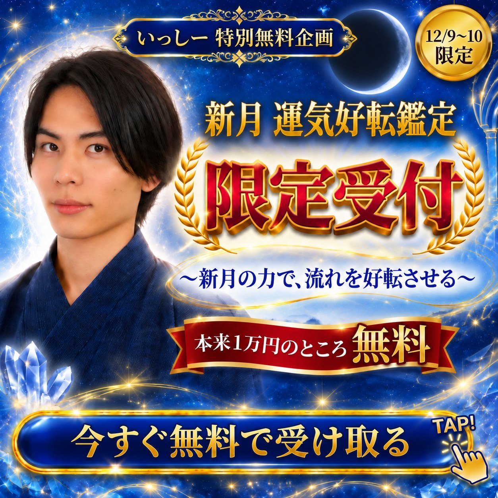
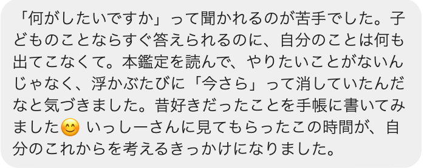

新月 運気好転鑑定｜いっしー
今年も自分のこと、
後回しのままで
終わっていい？
無料鑑定を受け取った方へ
SCROLL
新月を迎える師走。始まりの力が高まる時期に、年末までの自分の流れを確かめよう。
たとえば、頼まれると断れない。仕事も人間関係もこなしているのに、「自分はどうしたい？」と聞かれると答えが出ない。
恋愛や仕事、お金や人間関係。ここにある場面は一例だよ。今のあなたが知りたいことから、全体の流れを読み解いていきます。
別々に見える悩みが、なぜ同じところへ戻ってしまうのか。
無料鑑定で気になった言葉があった方へ。まだしっくり来ていない方も、今のご相談を整理するところから始められます。
何かをすぐ決めなくていいよ。まずは、自分の気持ちと本来の持ち味が、どこで離れてしまったのかを見つめよう。
もし「また今度」が続いているなら、自分の本音を聞く時間まで後回しになっているかもしれないね。まず、今の気持ちを確かめよう。
恋愛・仕事・お金・家族など、今のご相談から全体の流れを見つめます。無料鑑定では、今の流れと先に整える一歩をお伝えします。本鑑定は、その悩みが続く背景や、これから整える順番・選べる道まで深める鑑定です。
これはお金や人間関係の結果を約束するものではなく、今の自分を理解し、選ぶための鑑定書です。
▼本鑑定で分かることを見る9,980円（税込）の1商品「またお金を使って、何も変わらなかったらどうしよう」
その気持ち、自然だよ。
毎月の支払いがある中で、占いにお金を使うのは、勇気がいるよね。

迷うのは、弱いからじゃないんだよ。
今の暮らしと、受け取れる内容を大切に考えていいんだよ。
不安を煽って、また来ないと心配になるような鑑定は、しないから安心してね。
急かさないよ。
無料で受け取った一歩を試してから、さらに深めたいことがあるか確かめても大丈夫だよ。
届いた声を、少しだけ。


今の悩みだけでなく、繰り返す理由と、これからの道まで。

ご相談内容を受け取ってから、今のあなたに合わせて読み解きます。鑑定結果は約3〜5日で、公式LINEへメッセージでお届けします。
本格特別鑑定を申し込む9,980円（税込）・STORESで決済鑑定をご案内したLINEに、今気になっていることをそのままお送りください。
9,980円（税込）の本格特別鑑定をお選びください。
決済時のお名前・購入した商品名・購入完了画面を、鑑定をご案内したLINEへお送りください。
特に知りたいことや、変えていきたいことを確認します。
約3〜5日で、文章の鑑定結果を公式LINEのメッセージでお届けします。
届いたLINEを、そのまま載せるね。



掲載の感想は、これまでの本鑑定についていただいたものです。今回の12月企画の結果を示すものではありません。
生活費や必要な支払いを削らないと受けられない方は、今回はお見送りください。
鑑定は、未来や収入の結果を保証するものではありません。すべての判断を鑑定に任せたい方にも向いていません。
無料鑑定だけを受け取る選択も大切にしてください。購入しないことで運が下がることはありません。
年を越す前の、
静かな夜に。
今夜、もう一度だけ
自分に聞いてみてね。
本当は、
何をいちばん
終わらせたい？
同じ不安に戻ること。
全部をひとりで
抱えること。
自分のことを
後回しにすること。
ひとつでも
胸が動いたなら、
その先にある言葉を
受け取る準備が
できているのかも
しれません。
ページの最後に、
私からの言葉を
残しています。
いっしー
▼本格特別鑑定の内容を確認する9,980円（税込）